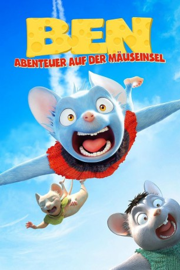

#10205 Ben: Abenteuer auf der Mäuseinsel
Alternativ: Air Bound (Englischer Titel)
 
 IMDB-Wertung: 5.1 / 10
IMDB-Wertung: 5.1 / 10  Metascore: 0
Metascore: 0 
Stadtmaus Ben träumt von einem großen Abenteuer: Er möchte unbedingt den riesigen Ozean sehen. Auf seiner Reise trifft er auf den verzweifelten Mäuserich Ole, der dringend Hilfe braucht. Sein Dorf wird von kampflustigen Wieseln angegriffen, unter Führung des teuflischen Vin Wiesel. Ben muss nicht nur lernen, für sich selbst einzustehen, sondern auch, dass man nur gemeinsam mit seinen Freunden schwierige Situationen meistern kann.
Jahr: 2015
Dauer: 100 Minuten
FSK: 6
Land: Japan Studio: Lighthouse Home EntertainmentTonspuren: DTS - ,
Untertitel:
Auflösung: 1080p (1920x800) Größe: 4403 MB
Genre: Action, Komödie, Abenteuer, Fantasy, Animation/Trick, Familie
Regisseur: Tomohiro Kawamura, Yoshihiro Komori
Drehbuch: Atsuo Saitô, Ryôta Kosawa, Wendee Lee, Ryôta Kosawa
Soundtrack: Benjamin Wallfisch
Darsteller:
Datei: X:\Kinder Anime\Div Anime\Ben Abenteuer auf der Mäuseinsel (2015, FSK6, 1920x800).mkv seit 18.12.2018
Festplatte: Kinder-Filme+Trick
 Es gibt insgesamt 40 Filme in der Gruppe 'Kinder Anime\Div Anime'
Es gibt insgesamt 40 Filme in der Gruppe 'Kinder Anime\Div Anime'